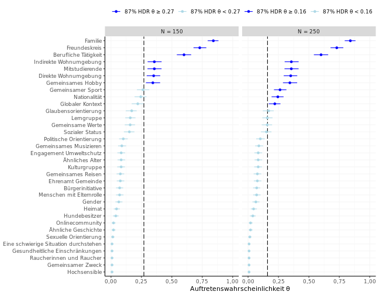

Get Started
Now that you have gone through the installation procedure, let’s see
what you can do with frankmakrdiss. We begin with attaching
the package and setting the number of computer cores dedicated to the
Bayesian modeling. For this example we will set the number of cores to
the default number of parallel MCMC chains in Stan.
library(frankmakrdiss)
options(mc.cores = 4)On attaching the package there are some checks, if
CmdStan and cmdstanr are properly installed.
Remember, they are not on CRAN. If everything looks good we can
continue with a first example: Reproducing figure 12.6 from the doctoral
dissertation. Please note that you should not expect exact
reproducibility due to the external constraints mentioned in the Stan
reference manual.
Reproducing figure 12.6
By looking in the doctoral dissertation we know that figure 12.6 is based on model 12.2 from the first study. The package help shows which variables we need to use.
?comms_demo
?comms_data
?stan_dissmodelTo prepare the data we build a named list with the relevant variables.
standat_f12.6 <- list(
K = length(levels(comms_data$k_iter3)),
N = nrow(comms_demo),
y = tabulate(comms_data$k_iter3),
L = 5,
N_tilde = seq(from = 200, to = 1000, by = 200)
)It’s time to fit the model.
fit_f12.6 <- stan_dissmodel(model_number = "12.2", stan_data = standat_f12.6)
#> Model executable is up to date!
#> Running MCMC with 4 parallel chains...
#>
#> Chain 1 Iteration: 1 / 2000 [ 0%] (Warmup)
#> Chain 2 Iteration: 1 / 2000 [ 0%] (Warmup)
#> Chain 2 Iteration: 500 / 2000 [ 25%] (Warmup)
#> Chain 3 Iteration: 1 / 2000 [ 0%] (Warmup)
#> Chain 3 Iteration: 500 / 2000 [ 25%] (Warmup)
#> Chain 4 Iteration: 1 / 2000 [ 0%] (Warmup)
#> Chain 4 Iteration: 500 / 2000 [ 25%] (Warmup)
#> Chain 1 Iteration: 500 / 2000 [ 25%] (Warmup)
#> Chain 2 Iteration: 1000 / 2000 [ 50%] (Warmup)
#> Chain 2 Iteration: 1001 / 2000 [ 50%] (Sampling)
#> Chain 1 Iteration: 1000 / 2000 [ 50%] (Warmup)
#> Chain 1 Iteration: 1001 / 2000 [ 50%] (Sampling)
#> Chain 3 Iteration: 1000 / 2000 [ 50%] (Warmup)
#> Chain 3 Iteration: 1001 / 2000 [ 50%] (Sampling)
#> Chain 4 Iteration: 1000 / 2000 [ 50%] (Warmup)
#> Chain 4 Iteration: 1001 / 2000 [ 50%] (Sampling)
#> Chain 2 Iteration: 1500 / 2000 [ 75%] (Sampling)
#> Chain 1 Iteration: 1500 / 2000 [ 75%] (Sampling)
#> Chain 3 Iteration: 1500 / 2000 [ 75%] (Sampling)
#> Chain 4 Iteration: 1500 / 2000 [ 75%] (Sampling)
#> Chain 2 Iteration: 2000 / 2000 [100%] (Sampling)
#> Chain 2 finished in 0.6 seconds.
#> Chain 3 Iteration: 2000 / 2000 [100%] (Sampling)
#> Chain 4 Iteration: 2000 / 2000 [100%] (Sampling)
#> Chain 1 Iteration: 2000 / 2000 [100%] (Sampling)
#> Chain 1 finished in 0.9 seconds.
#> Chain 3 finished in 0.7 seconds.
#> Chain 4 finished in 0.7 seconds.
#>
#> All 4 chains finished successfully.
#> Mean chain execution time: 0.7 seconds.
#> Total execution time: 1.0 seconds.After fitting the model we should check the sampling diagnostics.
fit_f12.6$cmdstan_diagnose()
#> Processing csv files: ...
#>
#> Checking sampler transitions treedepth.
#> Treedepth satisfactory for all transitions.
#>
#> Checking sampler transitions for divergences.
#> No divergent transitions found.
#>
#> Checking E-BFMI - sampler transitions HMC potential energy.
#> E-BFMI satisfactory.
#>
#> Effective sample size satisfactory.
#>
#> Split R-hat values satisfactory all parameters.
#>
#> Processing complete, no problems detected.For later reuse we can save the fitted model in the active working directory or any other location.
fit_f12.6$save_object(file = "fit_f12.6.rds")Now that we have the posterior distribution of the parameters we are
interested in we can make the ggplot2 graph. For each graph
a corresponding function to prepare the data frame is exported. So we
can also easily adapt the graphs to a new style.
?make_thetapointrange
?plot_thetapointrange
plotdat_f12.6 <- make_thetapointrange(
fit_f12.6$draws("theta", format = "draws_matrix"),
probs = 0.87, n_group_tilde = 40, n_sample_tilde = 1000)
plot_thetapointrange(plotdat_f12.6)Adapting figure 12.6
Let’s suppose we’re planning a similar study with the same target population. But because of strict time restrictions we would expect a sample size of rather 150 or 250 than 1000. Under these constraints, what are the expected probabilities for a minimum group size of 40?
We’ve already fit the model so all we need is new plot data. Let’s first build a list of data frames with the new plot data.
plotdat_f12.6_list <- lapply(c(150, 250), function(i)
make_thetapointrange(
fit_f12.6$draws("theta", format = "draws_matrix"),
probs = 0.87, n_group_tilde = 40, n_sample_tilde = i)
)But now we rather want a figure with the two expected sample sizes
shown side by side than two separate figures. A convenient way to
achieve this is using ggplot2::facet_wrap(). Therefore we
have to build one big data frame and create a new variable as an
indicator for the two facets. Since we have a list of data frames let’s
first sapply() the new column to each data frame in the
list and then rbind() the data frames.
plotdat_f12.6_fac <- do.call(rbind,
sapply(1:2, function(i) data.frame(
plotdat_f12.6_list[[i]],
fac = factor(i, levels = 1:2, labels = c("N = 150", "N = 250"))),
simplify = FALSE)
)We’re now ready to change the default ggplot2 graph. All
we have to do is adding the new layers to the plot. Because we haven’t
attached ggplot2 yet we need to refer to a function in
ggplot2 with an explicit ggplot2::. Let’s also
make a quick change of the colors, too.
plot_thetapointrange(plotdat_f12.6_fac) +
ggplot2::scale_color_manual(values = rep(c("blue", "lightblue"), 2)) +
ggplot2::facet_wrap(ggplot2::vars(fac))
#> Scale for colour is already present.
#> Adding another scale for colour, which will replace the existing scale.